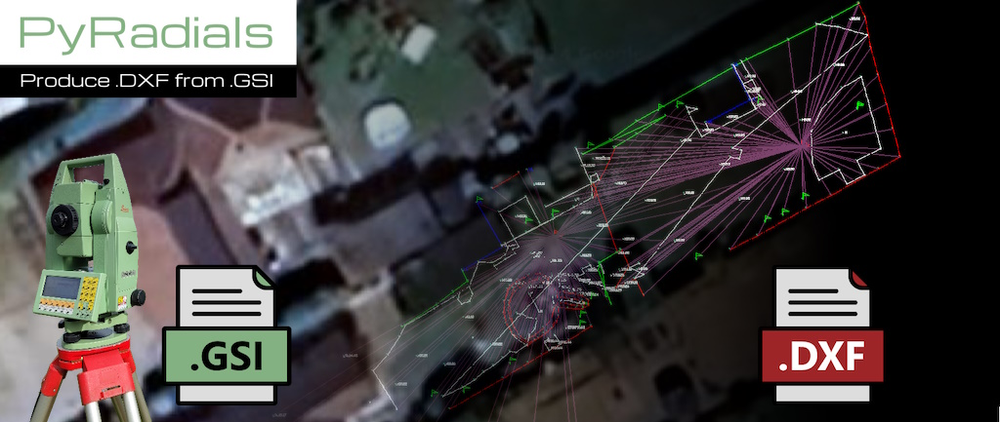

PyRadials is currently in development. If you want to run from source, checkout the develop branch on the project's github repo.
PyRadials, an open-source software by Adam Bonner, revolutionizes surveying with its MIT-licensed platform. Importing data from Leica and Trimble devices, it converts to OSGB36 coordinates and drafts precise AutoCAD-compatible drawings. With plans for What3words integration and expanded features like tree and furniture plotting, PyRadials democratizes survey drafting. Its "free to use, paid support" model ensures accessibility, while frequent updates promise ongoing improvements. PyRadials offers professionals a versatile, evolving solution for efficient survey data management and project visualization.
One of PyRadials' standout features is its capability to seamlessly import and process data from multiple sources, including Leica TPS1100 series .gsi files and GPS coordinates from Trimble TSC3 devices. Leveraging mathematical algorithms such as polar to Cartesian conversion, PyRadials produces accurate OSGB36 coordinates, laying the groundwork for precise project mapping.
The software's versatility extends to its drafting engine, powered by the EZDXF library, enabling the creation of intricate drawings compatible with AutoCAD. From delineating walls and surface changes to plotting spot levels, PyRadials supports a wide range of codes and layers, facilitating detailed project visualization.
Furthermore, PyRadials is poised to expand its capabilities with planned integrations like What3words, simplifying station localization for enhanced project management. Future updates promise additional features, including support for trees, topographic features like tadpoles, and even household furniture, catering to diverse surveying needs.
PyRadials stands out in its commitment to democratizing survey drawing creation, offering a powerful alternative to proprietary software with its open-source framework. Developed by Adam Bonner, PyRadials is released under the MIT license, ensuring accessibility for professionals seeking efficient surveying solutions.
PyRadials adopts a "free to use, paid support" model, ensuring accessibility while providing avenues for users to obtain assistance and guidance as needed. With frequent updates expected in the coming weeks and months, PyRadials remains dedicated to refining its offerings and addressing evolving industry demands.
Adam Bonner, 2024
Released under the MIT Licence, see more at the github pages hosting for this website.